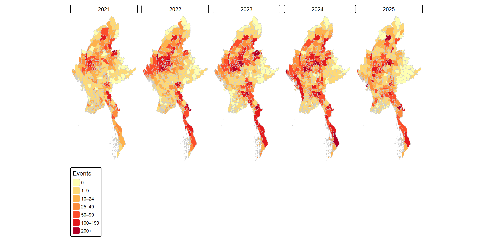

%%{init: {"theme": "neutral", "themeVariables": {"fontSize": "20px"}, "flowchart": {"nodeSpacing": 15, "rankSpacing": 20}}}%%
flowchart LR
A1["ACLED Myanmar<br/>2021–2025<br/>87,109 events"] --> A2["Keep 3<br/>armed-conflict<br/>types"]
A2 --> A3["Drop<br/>geo_precision 3"]
A3 --> A4["Assign to<br/>townships<br/>(st_join)"]
A4 --> A5["Remove<br/>duplicates<br/>53,907 events"]
A5 --> A6["Space-time cube<br/>330 × 19 =<br/>6,270 rows"]
classDef data fill:#dbe9f6,stroke:#2c7bb6,color:#000
classDef out fill:#fde0c5,stroke:#e66101,color:#000
class A1,A2,A3,A4,A5 data
class A6 out
Executive Summary: Geospatial Analytics for Peace
Myanmar Armed Conflict & Civilian Protection (2021 to 2025)
2026-10-25
4. Key Findings: Where Conflict Clusters
- Armed conflict is highly concentrated: 104 of 330 townships are significant, far more than the ~16 expected by chance.
- A High-High core spans the central zone for all three conflict types, with a second cluster in the south-east.
- Low-Low clusters in the southern delta and eastern highlands have remained relatively insulated.
- Low-High outliers sit on the edges of conflict zones, the townships most at risk of spill-over. High-Low outliers are rare: high conflict is almost never isolated.
- Battles extend furthest, to the far north and border areas; violence against civilians concentrates in the centre and along the south-eastern coast.

5. Key Findings: How Conflict Is Evolving
- Conflict is spreading outwards, not receding. Consecutive (6) and oscillating (28) hot spots appear at the periphery: the north-central area, the south-eastern interior and the south-eastern coastal strip.
- Pace of change: new and consecutive hot spots mark areas where conflict has emerged recently and quickly.
- Remote violence shows the strongest escalation, with the only intensifying and new hot spots.
- No diminishing or historical hot spots in any run, so there is no statistical evidence of de-escalation anywhere.
- Trends are robust: 90% remain significant after correcting for serial correlation.


6. Value-Added: The Shift to Air Power

Military air strikes kept rising after Operation 1027, while armed clashes eased
- After Operation 1027 (Oct 2023), military air strikes roughly tripled and kept rising, from about one-tenth of armed clashes in 2022 to about three-quarters by 2025.
- State forces carried out 71% of air strikes, 37.8% of them civilian-targeted (under 6% for other groups), and account for 92.8% of deaths from civilian-targeted air strikes.
- When civilians are targeted, military air strikes kill 1.64 people per event, against 0.85 for all other attacks on civilians (Wilcoxon test, p < 0.001).